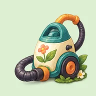

Sedot dan tembak
Jika BlastBlast! memompa dan melepaskan pemadam, Vacuum Shot mengambil benda dan menembakkannya dengan kekuatan tetap, jadi benda yang Anda pilih menentukan tembakannya.

Vacuum ShotHalaman permainan WillowinWorlds Kembali ke WillowinWorldsSedot benda. Tembakkan. Terbang.
Ketuk benda untuk menariknya ke kantong penyedot debu, tembakkan untuk mendapatkan rekoil, lalu mendarat lembut agar rangkaian skor tetap berjalan. Rute taman tidak pernah berakhir.
Proyek Unity memiliki satu penyedot debu, 39 benda, rute tanpa akhir, dan panel peningkatan, dengan tes otomatis. Audio dan build perangkat masih akan menyusul.
Ketuk benda di padang rumput atau langit untuk menariknya ke dalam kantong. Kantong hanya memuat satu benda, dan peringkat dayanya menunjukkan seberapa kuat tembakannya.
Ketuk di tempat lain untuk menembakkan benda dengan kekuatan tetap. Rekoil meluncurkan pilot ke depan dan ke atas, dengan jeda satu detik antar tembakan dan dua koreksi udara per penerbangan.
Pendaratan stabil mengisi ulang tembakan udara dan memberi skor sesuai nilai. Merangkai pendaratan terkendali menaikkan bonus.
Jika BlastBlast! memompa dan melepaskan pemadam, Vacuum Shot mengambil benda dan menembakkannya dengan kekuatan tetap, jadi benda yang Anda pilih menentukan tembakannya.
Benda koreksi udara, seimbang, pendaratan lembut, dorongan maju, dan angkat vertikal masing-masing menampilkan peringkat POWER 1/5 sampai 5/5. Sepuluh di antaranya melayang di udara sampai diambil.
Pendaratan butuh kontak stabil sekitar seperempat detik. Nilainya Perfect, Aman, atau Kasar, dan pendaratan terkendali yang berurutan membangun rentetan hingga delapan.
Bukit dan lembah yang bergulir tanpa rintangan penghalang membentuk rute, dan taman memudar menjadi langit ketinggian tinggi saat Anda terbang tinggi.
Dua cabang peningkatan, Motor dan Bag, naik sampai level 4 dan dibayar dengan Dew. Kemajuan disimpan terpisah untuk setiap penyedot debu.
Aturan peluncuran, pendaratan, kamera, dan progresi memiliki tes EditMode, dan perilaku adegan serta fisika memiliki tes PlayMode.
Belum ada tanggal rilis. Ini adalah tujuan proyek, bukan janji.
Tangkapan dalam engine dari proyek Unity, ditambah lembar benda yang bisa dikumpulkan.


Game arcade penerbangan rekoil tanpa akhir. Anda menyedot benda, menembakkannya untuk meluncurkan pilot ke depan, dan mendarat lembut untuk membangun rangkaian skor. Game ini dibangun di atas basis yang sama dengan milik studio BlastBlast!, dengan taman pastel, penyedot debu sebagai pengganti pemadam, dan benda yang menentukan kekuatan setiap tembakan.
Ini vertical slice untuk Android dan iOS. Profiling perangkat, audio final, dan build bertanda tangan masih menunggu, dan belum ada build publik, halaman toko, atau tanggal rilis.
Vacuum Shot dibuat oleh WillowinWorlds, studio game ponsel independen (lihat game utama). Ikuti WillowinWorlds di kanal sosial yang tertaut di halaman ini, atau email willowinworlds@gmail.com untuk meminta pembaruan tentang Vacuum Shot.
Pemungutan suara akan dibuka di kanal studio. Ikuti WillowinWorlds untuk ikut serta.